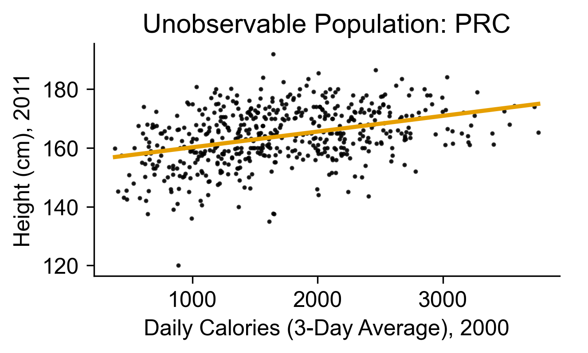
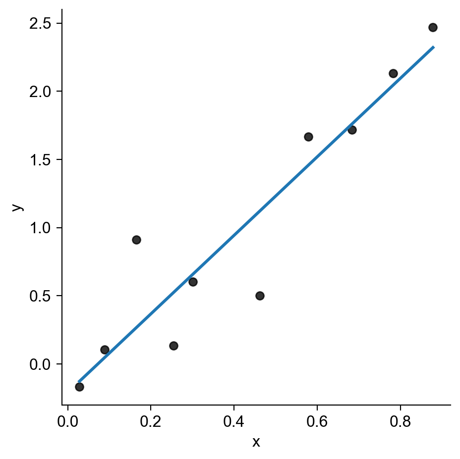
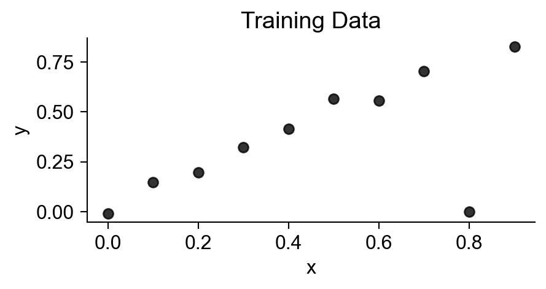
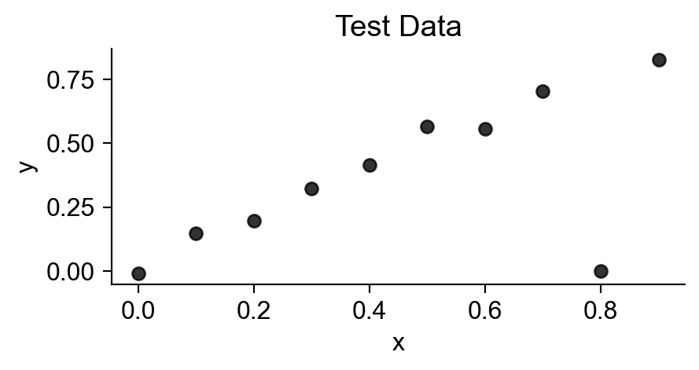
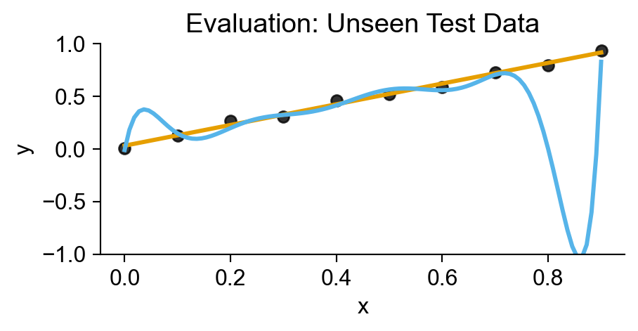

Week 1: Introduction to the Course
DSAN 5300: Statistical Learning
Spring 2026, Georgetown University
Wednesday, January 7, 2026
Memorizing vs. Learning
| Question 1 | How many sentences have you heard (as input) in your life? | Answer: Finitely many… 🤔 |
| Question 2 | How many sentences could you generate (as output) right now? |
Answer: Infinitely many… 🤯 (“My favorite number is 1”, “My favorite number is 2”, …) |
| Question 3 | How is this possible? | Answer: Our brains infer the “deep structure” of language, a generative model, from our linguistic inputs |
Our brains learn a grammar…
| S | \(\rightarrow\) | NP VP |
| NP | \(\rightarrow\) | DetP N | AdjP NP |
| VP | \(\rightarrow\) | V NP |
| AdjP | \(\rightarrow\) | Adj | Adv AdjP |
| N | \(\rightarrow\) | frog | tadpole |
| V | \(\rightarrow\) | sees | likes |
| Adj | \(\rightarrow\) | big | small | tiny |
| Adv | \(\rightarrow\) | very | immensely |
| DetP | \(\rightarrow\) | a | the |
…For generating arbitrary (infinitely many!) sentences

Why “Not Yet Observed”? (Real Data!)
Data from China Health and Nutrition Survey
Code
chns_df = pd.read_csv("data/chns_2000_2011.csv")
# First use statmodels to get the intercept and slope for pop
height_model_result = smf.ols(
formula='height_cm_2011 ~ daily_calories_2000',
data=chns_df
).fit()
ols_params = height_model_result.params
ols_int = ols_params['Intercept']
ols_slope = ols_params['daily_calories_2000']
x_mean = chns_df['daily_calories_2000'].mean()
ols_at_mean = ols_int + ols_slope * x_mean
chns_df.head(4)| IDind | daily_calories_2000 | daily_calories_2011 | height_cm_2000 | height_cm_2011 | age_2000 | age_2011 | |
|---|---|---|---|---|---|---|---|
| 0 | 211101008005 | 2267.826467 | 2286.613966 | 162.0 | 175.0 | 12.0 | 24.0 |
| 1 | 211101008061 | 1671.856407 | 2166.041310 | 120.2 | 172.0 | 6.0 | 17.0 |
| 2 | 211103013003 | 1884.064868 | 1385.503177 | 163.0 | 164.5 | 17.0 | 28.0 |
| 3 | 211104001004 | 3394.813400 | 1526.421314 | 142.0 | 165.0 | 12.0 | 23.0 |
Code
cal_label = "Daily Calories (3-Day Average), 2000"
height_label = "Height (cm), 2011"
ax = pw.Brick(figsize=(3.5,1.75))
height_plot = sns.regplot(
chns_df,
x='daily_calories_2000', y='height_cm_2011',
ci=None,
color='black',
scatter_kws={'s': 2},
line_kws=dict(color='#E69F00'),
ax=ax
);
ax.set_title(f"Unobservable Population: PRC");
ax.set_xlabel(cal_label);
ax.set_ylabel(height_label);
ax.spines['right'].set_visible(False);
ax.spines['top'].set_visible(False);
ax
Code
sample_size = 25
num_samples = 20
sample_dfs = []
seed_start = 5310
for cur_seed in range(seed_start, seed_start+num_samples):
cur_sample_df = chns_df.sample(
n = sample_size, random_state=cur_seed
)
cur_sample_df['sample_num'] = cur_seed - seed_start
sample_dfs.append(cur_sample_df)
combined_df = pd.concat(sample_dfs, ignore_index=True)
# frame = pw.Brick(figsize=(4,3))
sample_plot = sns.lmplot(
combined_df,
x='daily_calories_2000', y='height_cm_2011',
hue='sample_num', ci=None,
palette=sns.color_palette("light:#000"),
# palette='Greys',
aspect=1.67, height=3,
scatter_kws={'alpha': 0.1},
line_kws={'alpha': 0.5},
truncate=False,
legend=None,
);
sample_plot.ax.axline(
xy1=(x_mean,ols_at_mean),
slope=ols_slope,
color='#E69F00',
lw=2.5,
)
sample_plot.ax.set_title(f"{num_samples} Observed Samples (n = {sample_size} Each)");
sample_plot.set_xlabels(cal_label);
sample_plot.set_ylabels(height_label);
plt.show()
- Which line is “correct”? We don’t know! Samples may not arrive until the future!
- \(\leadsto\) We need to incorporate uncertainty about the future into our model
Computers “Learning” = Computers Obediently Following Orders
Code
rng = np.random.default_rng(seed=5302)
n = 10
x_vals = rng.uniform(size=n, low=0, high=1)
y_vals_raw = 3 * x_vals
y_noise = rng.normal(size=n, loc=0, scale=0.5)
y_vals = y_vals_raw + y_noise
data_df = pd.DataFrame({'x': x_vals, 'y': y_vals})
sns.lmplot(
data_df,
x='x', y='y',
scatter_kws=dict(color='black'),
ci=None
)
sns.lmplot(
data_df,
x='x', y='y',
scatter_kws=dict(color='black'),
order=n,
ci=None
)


5000: Accuracy \(\leadsto\) 5300: Generalization
- Training Accuracy: How well does it fit the data we can see?
- Test Accuracy: How well does it generalize to future data?
Code
from sklearn.preprocessing import PolynomialFeatures
x = np.arange(0, 1, 0.1)
n = len(x)
eps = rng.normal(size=n, loc=0, scale=0.04)
y = x + eps
# But make one big outlier
midpoint = int(np.ceil((3/4)*n))
y[midpoint] = 0
of_df = pd.DataFrame({'x': x, 'y': y})
# Linear model
# lin_model = smf.ols(formula='y ~ x', data=of_data)
train_plot = sns.lmplot(
data=of_df,
x='x', y='y',
scatter_kws=dict(color='black'),
ci=None,
fit_reg=False,
height=2.4,
aspect=2,
)
plt.title("Training Data");
plt.show()
# Data setup
x_test = np.arange(0, 1, 0.1)
n_test = len(x_test)
eps_test = rng.normal(size=n_test, loc=0, scale=0.04)
y_test = x_test + eps_test
of_test_df = pd.DataFrame({'x': x_test, 'y': y_test})
test_points_plot = sns.lmplot(
data=of_df,
x='x', y='y',
scatter_kws=dict(color='black'),
line_kws=dict(color=cb_palette[0]),
ci=None,
height=2.4,
aspect=2,
fit_reg=False,
);
plt.title("Test Data");
plt.show()
perfect_plot = sns.lmplot(
data=of_df,
x='x', y='y',
scatter_kws=dict(color='black'),
line_kws=dict(color=cb_palette[0]),
ci=None,
height=2.4,
aspect=2,
)
perfect_plot.ax.set_ylim(-1, 1);
sns.regplot(
data=of_df,
x='x', y='y',
order=n,
ci=None,
scatter_kws=dict(color='black'),
line_kws=dict(color=cb_palette[1])
)
plt.title("A Perfect Model?");
plt.show()
test_plot = sns.lmplot(
data=of_test_df,
x='x', y='y',
ci=None,
scatter_kws=dict(color='black'),
line_kws=dict(color=cb_palette[0]),
height=2.4, aspect=2,
);
test_plot.ax.set_ylim(-1, 1);
sns.regplot(
data=of_df,
x='x', y='y',
order=n,
ci=None,
scatter_kws=dict(color='black'),
line_kws=dict(color=cb_palette[1]),
marker='',
);
plt.title("Evaluation: Unseen Test Data");
plt.show()



Scientific Models

Ptolemaic model: wrong? or just “less good” than Copernican model? How so?1

Consequence: “No Free Lunch”!
True DGP: Polynomial

True DGP: Linear

True DGP: Highly Nonlinear

Squared bias (blue), variance (orange), unavoidable error (dashed line), and test MSE (red) for the three data sets in Chapter 1 of James et al. (2023), pg. 33